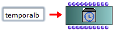
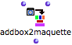
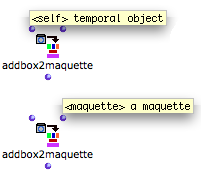
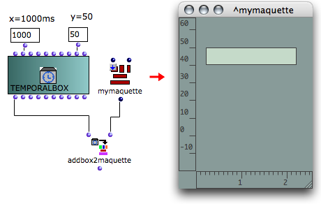
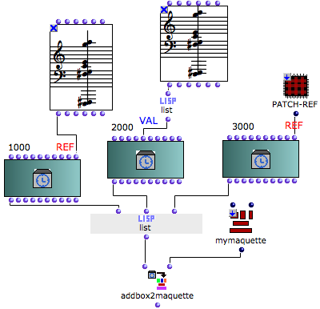
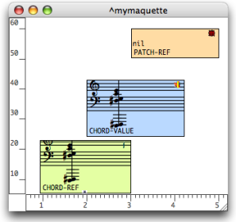
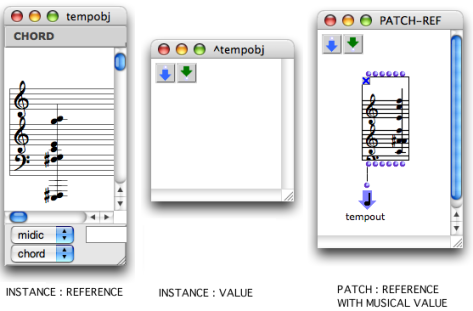
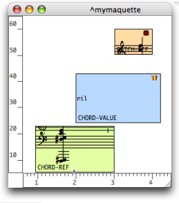

OpenMusic DocumentationHiérarchie de section : OM 6.6 User Manual > Maquettes > Maquettes in Patches > Reference Mode > Adding TemporalBoxes
OpenMusic DocumentationHiérarchie de section : OM 6.6 User Manual > Maquettes > Maquettes in Patches > Reference Mode > Adding TemporalBoxes
Navigation : page précédente | page suivante
Attention, votre navigateur ne supporte pas le javascript ou celui-ci à été désactivé. Certaines fonctionnalités de ce guide sont restreintes.
Reference Mode : Adding TemporalBoxes in a Maquette
Before a TemporalBox is added in a maquette on "reference" mode, this box must be created in a patch as a TemporalBox instance. Several functions can then be used for adding, accessing, deleting a TemporalBox from a maquette.
Creating a Temporalbox Instance in a Patch
To add a Temporalbox instance in a patch, TemporalBox instances must then be assigned required values, such as a position, a value, a duration, and so on. |

|
Addbox2maquette Function
Functionalities
|  | The addbox2maquette function allows to add one or more TemporalBoxes in a maquette from a patch. |
The addbox2maquette function as two inputs and one input :
|

|
To add the addbox2maquette function :
-
Cmdclick and type "addbox2maquette" - select
Functions, OMKernel, Maquette / Addbox2maquette.
Procedure
To add a TemporalBox with the addbox2maquette function :
connect the "self" output of a TemporalBox instance to the "self" input of the function
connect the "self" output of the maquette box to the "maquette" input of the function
evaluate the function.
The parameters assigned to the TemporalBox instance are expressed by the graphic position of the TemporalBox.

The TemporalBox is assigned a temporal and a vertical position.
Other Parameters
Of course, many other parameters and more or less sophisticated interactions between those parameters – for instance, position / colour / pitch – can be at stake in the maquette's program.
Programming with Parametric Interaction
Reference and Value Inputs of the TemporalBox
A TemporalBox instance is an actual program, which can :
- calculate and yield an object via its internal program,
- be given a value via the "value" input,
- refer to an object via its "reference" input.
Adding Objects with the "Value" and "Reference" Inputs of a Temporalbox Instance

This patch adds three objects in a maquette :
a chord, via a "reference" input
another chord, via a "value" input
a patch with a chord for musical value,via a "reference" input.

|
Addbox2maquette has been evaluated, but the TemporalBoxes have not been evaluated yet.
|
The TemporalBoxes content shows a chord instance, an empty patch and a patch producing a musical value.

The TemporalBoxes have been evaluated. Their content has not changed.
|

|
"Value" vs. "Reference" Input
The object connected to the "value" input becomes the value of this box. This result is updated at each evaluation of the box's program in the maquette.
- If this program is empty, then the TemporalBox won't yield anything .
- If not, it yields whatever is connected to the program's Tempout , no matter what is connected to its "value" input.
The object connected to the "reference" input becomes a permanent reference for the TemporalBox in the maquette.
- This object can be a patch or maquette on "reference" mode, or an instance .
- If no object is assigned to this "reference" input, the TemporalBox will be an empty patch.
Références :
Plan :
Navigation : page précédente | page suivante
A propos...(c) Ircam - Centre Pompidou